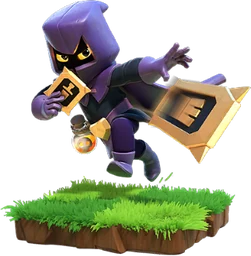

Headhunter — Clash of Clans
Updated: 26 August 2026 · By the Goblins Farm team
The Headhunter is one of the few genuinely single-purpose troops in the game. She seeks out defending heroes and Clan Castle troops, slows them, and kills them. Against a base with no heroes awake she is close to useless, which is the trade.
- Housing space
- 6
- Levels
- 4
- Trained in
- Dark Barracks
- Targets
- Ground and air
- Attack speed
- 0.6s
- Range
- 3 tiles
What it does
She prioritises defending heroes and Clan Castle troops over buildings, moves quickly, and applies a slowing effect to what she attacks. A small number of Headhunters can neutralise a defending Archer Queen, which is frequently the single most dangerous thing on a base.
How to use it
Bring them for a specific problem.
- Against high-level defending heroes, which otherwise wreck ground pushes.
- During the Clan Castle lure, where they add fast damage to the troops you have pulled out.
- Not as general damage. Once heroes and Castle troops are dead, they are ordinary fragile units.
How to beat it
Splash damage near your hero altars, since Headhunters travel in small groups and are fragile. Positioning heroes so they wake up covered by area damage means attackers cannot cheaply remove them with a handful of specialists.
Stats by level
| Level | Hitpoints | DPS | Research cost | Research time | Town Hall |
|---|---|---|---|---|---|
| 1 | 360 | 105 | — | — | 12 |
| 2 | 400 | 115 | 57,500 Dark Elixir | 5 d | 12 |
| 3 | 440 | 125 | 90,000 Dark Elixir | 7 d | 13 |
| 4 | 500 | 135 | 370,000 Dark Elixir | 15 d 12 h | 18 |
Where these numbers come from. Read from Clash of Clans' own game files, client build 18.400.21. They are exact for that build and do not reflect anything released after it, so verify in game before committing an upgrade.
Game values are read from Supercell's own game files, reproduced as fan content under Supercell's Fan Content Policy. Goblins Farm is not affiliated with, endorsed, sponsored, or specifically approved by Supercell, and Supercell is not responsible for it.
Frequently asked
What do Headhunters target?
Defending heroes and Clan Castle troops, in preference to buildings, and they slow what they attack. They are brought specifically to neutralise a dangerous defending hero rather than to deal general damage.
Are Headhunters worth the housing space?
Against bases with strong defending heroes, yes, because an awake Archer Queen can end a ground push on her own. Against a base with weak or no heroes they contribute very little.
Goblins Farm is not affiliated with, endorsed by, sponsored by, or specifically approved by Supercell. Clash of Clans is a trademark of Supercell Oy. This material is unofficial fan content produced under Supercell's Fan Content Policy. Game values change with every update; always verify in-game before committing an upgrade.